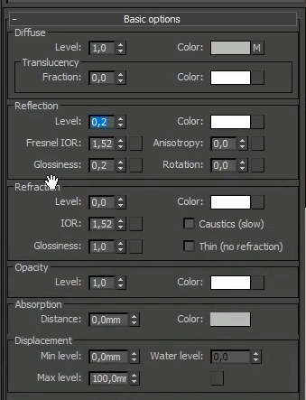
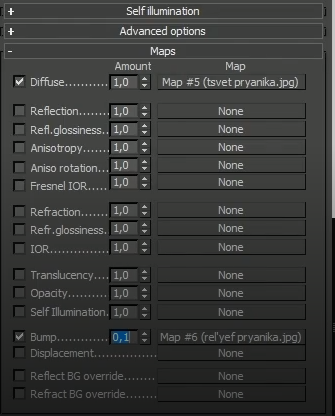
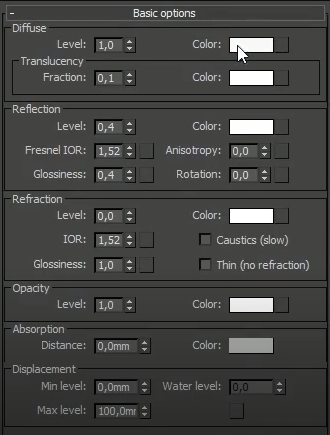
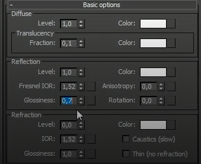
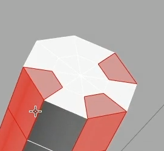
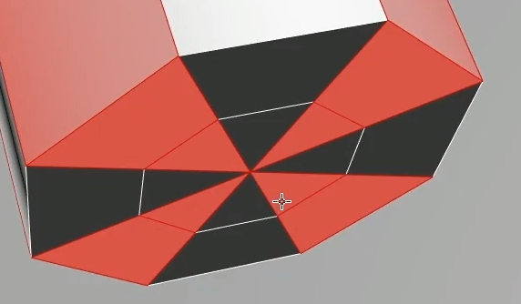
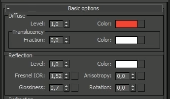
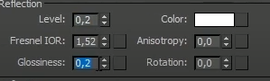
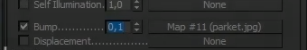

Меню материалов - M - на клавиатуре. И в Modes – compact.
Надо выбрать один из шаблонов под материал (сферки). Внизу находятся настройки данного материала, внизу пункт Bump – куда необходимо загрузить рельеф пряника, а в пункт Diffuse color – цвет пряника.
Настройка материала
 Теперь надо выбрать объекты, к которым будут применяться материал (при необходимости надо раскрыть группы объектов) и на панеле - Assign Material to selection (или просто Drag&Drop материала на объект). Материал возможно не будет отображаться на сцене, но он будет отображаться при рендере.
Теперь создается материал сахара (для украшений на пряничках).
Так же надо взять свободный материал и начинать его настраивать. Создается белый, красный и черный сахар, меняя лишь параметр в Diffuse – Color.
Материал конфеты
Создается материал конфетки белого и красного цвета.
Применяется белый материал ко всей конфете. Выбирается цилиндр и применяется модификатор Poly Select, который дает возможность работать с полигонам, границы и любые составные части нашего объекта.
Выбирается Polygon и треугольники в центре конфеты.
 Берется верхний полигон и с помощью Shift нажимается на следующий полигон - находящийся под уже выбранным, а дальше с помощью Ctrl добавляются остальные полигоны, не забывая про треугольник внутри фигуры.
Теперь применяется модификатор Edit Mesh - применение материалов к выбранным полигонам, и теперь необходимо перенести материал и включить все модификаторы обратно.
Материал для кружки
Материал для пола и заднего бокса
Бокс заднего плана просто красим в серый цвет
Для пола: В Bump и Diffuse color - файл Паркет и переносим на пол.
 